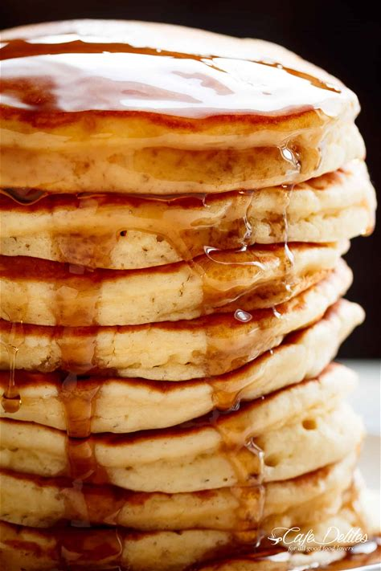

Pancakes

Ingredients
- 3 cups all-purpose flour
- 3 tablespoons white sugar
- 3 teaspoons baking powder
- 1 1/2 teaspoons baking soda
- 3/4 teaspoon salt
- 3 cups buttermilk
- 1/2 cup milk
- 3 eggs
- 1/2 cup butter, melted
Steps
- In a large bowl, combine flour, sugar, baking powder, baking soda, and salt. In a separate bowl, beat together buttermilk, milk, eggs and melted butter. Keep the two mixtures separate until you are ready to cook.
- Heat a lightly oiled griddle or frying pan over medium high heat. You can flick water across the surface and if it beads up and sizzles, it's ready!
- Pour the wet mixture into the dry mixture; use a wooden spoon or fork to mix until it's just blended together. The batter will be a little lumpy which is what you want.
- Pour or scoop the batter onto the preheated griddle, using approximately 1/2 cup for each pancake. Cook until bubbles appear on the surface, 1 to 2 minutes; flip with a spatula and cook until browned on the other side. Repeat with remaining batter.